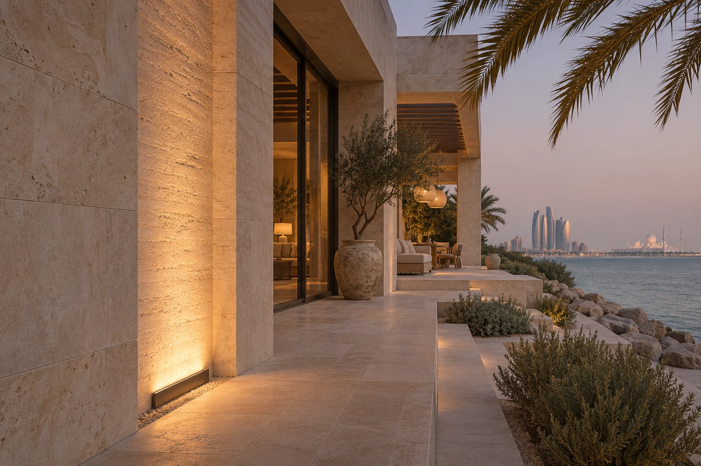

How UAE’s Extreme Climate Affects Outdoor LED & Facade Lighting Longevity
Outdoor wall lights and facade lighting in the UAE face heat, dust and coastal salt. Learn what to specify, test and maintain for a longer service life.

A run of outdoor wall lights can look perfectly matched at handover and uneven two summers later. One fitting sits under a shaded arch. Its neighbour is recessed into dark paving beside an irrigation head. They share a model number, but the driver, seals and optical surfaces experience different conditions. That difference belongs in the specification before a supplier quotes a lifetime in hours.
Start with the installation temperature
For exterior villa lighting in Dubai or Abu Dhabi, record where the sun falls, when the lights switch on, what surrounds the fitting and where the driver sits. Stone and metal can remain warm after sunset. A driver in a sealed service box has a different cooling path from a driver in a ventilated, accessible location. Ask the manufacturer for the rated ambient temperature (Ta), the permissible case temperature (Tc) at its marked test point and any output reduction at the project temperature.
A useful tender question is “What light output and driver life can you support for this mounting detail at our design ambient?” Ask for the answer against the proposed wattage, drive current, optic and housing. A lifetime claim based on another version of the product can conceal the precise limitation that matters on site.
Read the lifetime claim in layers
An L70 figure describes a light-output threshold. LM-80 measurements and TM-21 projections concern LED sources under defined conditions. A complete wall washer also relies on its driver, seals, connectors, optics and finish. Ask for the test conditions behind the projection, the complete-luminaire warranty, the driver replacement procedure and how long compatible spare parts will be supplied. A replaceable driver can make more difference to ownership cost than a longer headline lifetime.
Separate dust, water and salt exposure
IP ratings describe enclosure protection under defined tests. Use the actual exposure to select one. A sheltered wall light, a garden spike beside a sprinkler and an in-ground uplight at the bottom of a sloped driveway each need a different detail. Review drainage, cable entry and junction boxes together. A well-sealed fitting can still be let down by its connection.
For a coastal villa, request evidence for the coating system, fasteners and brackets in a salt-laden atmosphere. A cyclic salt-mist test can help compare proposed finishes. Its test duration does not translate directly into years on a beachfront. Also inspect the sample after cleaning. A scratched bezel or a bracket that traps salty water may be the first part the client notices.
Design a facade that can be maintained
Picture a textured limestone entrance washed from below. Dust on the first two lenses softens the beam and breaks the rhythm of the columns. Increasing output across the whole elevation brightens the clean bays as well. Instead, arrange access to the lenses, keep planting and irrigation clear, and record the aiming angle of each adjustable fixture so maintenance staff can restore the original scene.
For the mock-up, compare a recessed uplight with a shielded surface-mounted unit at the same viewing distance. Check the wall from the arrival route and from an upstairs bedroom. The best choice may be the fitting that is easier to service and keeps its bright aperture out of view, even if its catalogue lumen output is lower.
What to ask for at handover
- A marked-up facade drawing with fixture codes, aiming directions, driver locations and access instructions.
- A night photograph and a baseline measurement at agreed points with the final scene recalled.
- Cleaning instructions for the actual finish and optics, with an inspection after the first dusty season to set a realistic interval.
- A spare-parts schedule that preserves beam angle, colour temperature and driver compatibility when a single bay needs repair.
These records give the owner a way to tell whether a dimmer-looking facade is the result of dirt, changed aiming, a control setting or genuine light loss before replacing an entire row.
Discuss your lighting project with the studio ↗